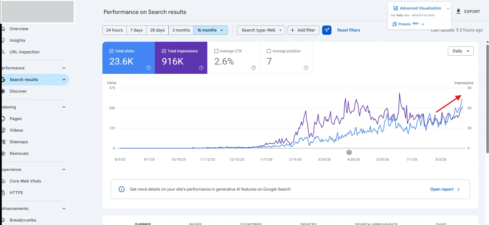
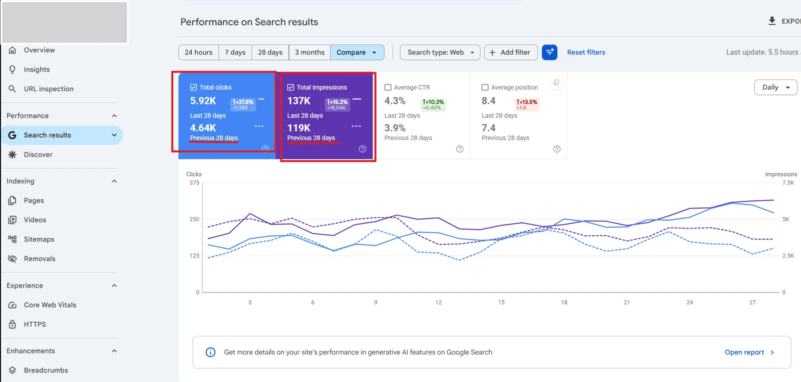
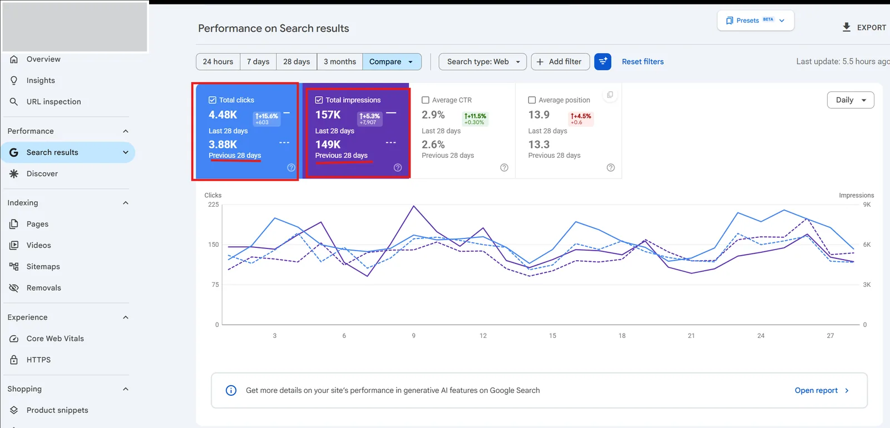
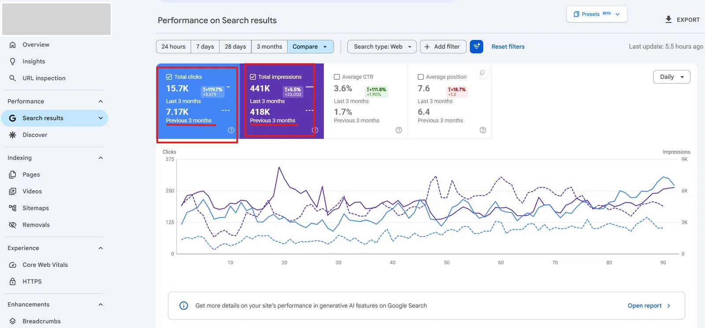

SEO Checker
ActiveChrome extension that checks page-level SEO signals including meta data, headings, links, images, schema and Search Console performance.
JavaScriptChrome Manifest V3SEO
SEO Executive at RankMeTop and SEO Strategist at RestoRefine, working across strategy and implementation: keyword and SERP analysis, on-page SEO, internal linking, topical maps and Search Console reporting, with technical audits where relevant. I have handled multiple international SEO projects at RankMeTop and through freelance work, for clients in the US, UK and Australia, covering ecommerce product and collection pages, service pages, landing pages and blogs.
Alongside SEO, I build practical systems that reduce repetitive work and make reporting easier without losing sight of search intent, topical coverage or the user journey.
Lead SEO strategy and execution across on-page SEO, keyword research, reporting, audits and content planning.
Handle SEO for multiple international client projects in the US, UK and Australia, covering ecommerce sites, service pages, landing pages and blogs, with keyword research, on-page optimization, reporting, audits and content planning.
Occasional freelance SEO for international clients, plus website, Python, API and AI workflow tasks.
Took greater responsibility across international SEO projects while building practical experience in keyword research, SEO audits, analysis, and implementation support.
Supported five to seven international client projects with keyword research, competitor analysis, on-page SEO, reporting, and content planning.
Built 15+ Python automation solutions for 10+ clients, including web scraping, data-processing scripts, API workflows and automation tools.
Selected anonymized Google Search Console snapshots from SEO work. The source screenshots intentionally omit client or domain names; the figures shown are historical snapshots, not guarantees of future performance.




Chrome extension that checks page-level SEO signals including meta data, headings, links, images, schema and Search Console performance.
Chrome extension that exports Google search-result titles and URLs directly to Google Sheets for SERP and keyword research.
Chrome extension that stores reusable business information locally and fills citation, directory, listing and web forms.
Web-based MikroTik RouterOS audit system that parses .rsc exports, checks configurations, and produces scored findings with remediation guidance.
Rule-based ecommerce fraud detection platform with transaction scoring, explainable flags, and administrative reporting workflows.
Company-internal automation that syncs tasks two ways between Google Sheets and ClickUp, and sends task updates to Slack through a bot.
Native Android widget platform inspired by Nothing OS, with clock, weather, screen time, quick actions, device health, and customization.
Android-first medication reminder app with medicine schedules, dose history, alarms and local notifications. Built as a completed personal app with offline-first local storage.
Additional Python tools, SEO automation workflows, and practical utilities are in progress and will be added selectively.
I audit your site, find what is holding rankings back and give you a clear, prioritized plan to fix it.
I map the topics your site should cover, plan each page and link them so search engines see your expertise.
I set up Search Console and GA4 reporting that shows what is working, what is not and what to do next.
I build websites with SEO set up from the start, so they are ready to rank and easy to grow.
I build custom tools in Python or whichever language and platform fits the job, from scripts and API integrations to browser extensions and bots, so repetitive work runs on its own.
I create AI skills tailored to your work, so AI assistants follow your process, use your information and handle tasks the way your team does.
Bijay is an SEO Executive at RankMeTop and an SEO Strategist at RestoRefine. He works across SEO strategy, on-page optimization, search analysis, content structure and performance reporting.
He works on ecommerce sites (product and collection pages), service pages, landing pages and blogs. His work covers domain-wide and content-gap analysis, keyword and SERP research, search intent, competitor analysis, topical maps, internal linking, content optimization and Search Console and GA4 reporting, with technical audits and fixes where they support the wider plan.
He uses them for day-to-day SEO work: publishing blog posts, updating page content, optimizing product and collection pages, setting up redirects and making on-page changes. He does not build themes, plugins, apps or extensions for these platforms.
He builds websites, Python automation, API integrations, data-extraction workflows, Google Apps Script connectors, Chrome extensions, Slack, Telegram and Discord bots, and AI skills and agent workflows that automate repeat SEO and business tasks.
He builds websites alongside his SEO work. He does not offer standalone graphic design or long-form content writing; on the content side he prepares SEO briefs and outlines and optimizes existing content.
He considers a limited number of selected remote part-time contracts that fit alongside his primary SEO roles. Availability and scope are discussed before any engagement begins.
Clear and timely communication, accurate information and the access the work needs, responsible handling of shared data on both sides, and pay that matches the agreed scope and workload.